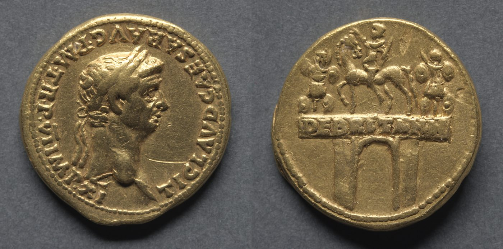
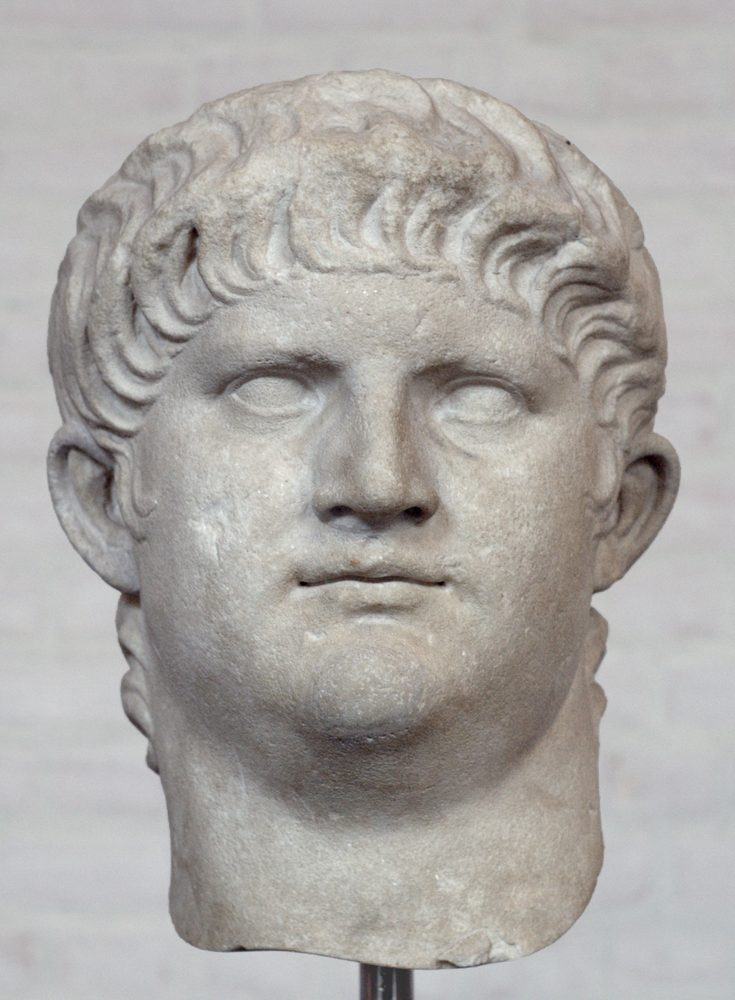

Unit 4 · Boudicca · Lesson 12
Client queen, ally or rebel?
Was Boudicca Rome’s client, Rome’s ally or Rome’s enemy? Ancient writers and modern historians answer differently. Today: whose view is whose, and why they differ.
Year 11 Ancient History · Present with → or space · Read on a phone with R

Connect · 3 minutes · books closed · everyone writes · press K for the timer
After the revolt: who paid, and how?
Name one consequence of the revolt for the Celts and one for the Romans.
Move this claim down the modality scale so it matches the evidence:
“The Longinus tombstone proves the rebels defaced it.”
Hostile peoples were “ravaged with fire and sword”, and, Tacitus says, famine followed because the Britons had been “careless about sowing corn” (Annals 14.38).
A new procurator, Julius Classicianus (14.38); Nero’s freedman Polyclitus sent to inquire; Suetonius replaced by Petronius Turpilianus (14.39), sent “to initiate a milder rule” (Agricola 16).
The Longinus tombstone may have been pulled down during the revolt, but its re-excavators’ evidence strongly suggests that its face broke off after the stone was already lying down, so it cannot confirm that rebels defaced it.
Today: back to before the revolt. How was the Iceni’s relationship with Rome described before and during it?
Learning intentions and success criteria · 2 minutes
Today’s goals
- evaluate interpretations of Boudicca’s relationship with the Romans
- write a conclusion that resolves a discussion
- explain the evidence for Boudicca as client queen, ally and rebel
- explain how gender shapes the Roman accounts
- write a conclusion with a decisive final sentence, using present tense for historians
Syllabus outcomes: AH-11-03 explains the role and significance of forces, features, events, individuals and groups in shaping the past · AH-11-05 analyses different types of sources for evidence to support a historical account or argument · AH-11-06 explains differing interpretations and representations of the past · AH-11-07 communicates historical understanding, applying historical knowledge, terms and concepts. Life Skills: AH-LS-09 identifies different interpretations of the past · AH-LS-11 communicates information about the past using historical terms and concepts.
Note-making · the routine for the whole course
How to structure your notes
questions and key terms, written after
short phrases, arrows (→ leads to), abbreviations (c. = about; Ann. = Annals)
- 1A new lesson, a new pageA cue column about a quarter of the page wide; title and date at the top; room for a summary at the bottom.
- 2Listen and look, then writeDon’t copy while a slide is being explained. Phrases, not sentences; a source for every claim.
- 3Write your own notes at each ✎ checkpointThen compare with the model notes, one row at a time. Add what you missed in a second colour.
- 4Write the cue questions afterwardsUse exam verbs: explain, discuss, assess. To revise, cover your notes and answer the cues.
- 5Finish with a three-sentence summaryTwo checkpoints today: the three labels · the historians and the gendered language.
Key vocabulary · add to the unit word wall
Words for today
| Verb (NESA) | Meaning · what the answer does |
|---|---|
| Discuss | ‘Identify issues and provide points for and/or against.’ — Weigh both sides; in History, end with a reasoned judgement. |
| Writing terms | Meaning |
| Conclusion | The last paragraph of an extended response: the thesis refined, the reasons drawn together and a decisive final judgement, with no new evidence. |
| Tense for writers | Past tense for events (the Iceni rose); present tense for what a writer or historian does (Tacitus presents …; Hingley argues …). |
| Content terms | Meaning |
|---|---|
| Client king | A local ruler allowed to keep his kingdom as Rome’s ally, in return for loyalty. |
| Ally | A people or ruler bound to Rome by agreement. |
| Rebel | Someone who takes up arms against the power that rules them. |
| Interpretation / representation | A historian’s evidence-based explanation of the past / a depiction of the past shaped by its maker’s time and purpose. |
| Composed speech | A speech written by an ancient historian for a character, showing the historian’s views. |
1 · Three labels · I do — watch me sort three pieces of evidence
Client queen, ally or rebel? Three sources, three labels
The Iceni, a powerful tribe, which war had not weakened, as they had voluntarily joined our alliance, were the first to resist.
Tacitus (about 55–120 CE), Annals 12.31 · trans. A. J. Church and W. J. Brodribb (1876) · when the governor planned to disarm them
Ally, in Rome’s words, about 13 years before the revolt; yet already the first to resist
Prasutagus, king of the Iceni, famed for his long prosperity, had made the emperor his heir along with his two daughters, under the impression that this token of submission would put his kingdom and his house out of the reach of wrong.
Tacitus, Annals 14.31 · trans. Church and Brodribb · just before the revolt of 60 or 61 CE
Client: a king who held his kingdom by Rome’s leave and hoped his will would protect it; Boudicca is not named as his heir
… under the leadership of Boudicea, a woman of kingly descent (for they admit no distinction of sex in their royal successions), they all rose in arms.
Tacitus, Agricola 16 (98 CE) · trans. Church and Brodribb
Queen by British custom, as Tacitus reports it; rebel in Rome’s eyes, after Prasutagus died
1 · Three labels · I do — perspective and time
It depends: whose view, and when?

| Rome’s view (Roman law) | The Britons’ view, as Tacitus reports it | |
|---|---|---|
| Before Prasutagus died | a client kingdom: a king ruling by Rome’s leave, and an ally | a kingdom with its own king, who hoped his will would keep it “out of the reach of wrong” (Annals 14.31) |
| After he died | part of the province: the rising was “the sudden revolt of the province” (14.31) | Boudicca, “a woman of kingly descent”, leading as British custom allowed (Agricola 16) |
In Roman terms, Prasutagus should have just given up his kingdom, because the Romans deemed the Iceni to be a ‘friendly people’. When such a ruler died, a territory that had been ruled by a friendly ruler was just incorporated into the Empire.
He didn’t try to leave the territory to his partner Boudica.
Richard Hingley, Professor of Archaeology, Durham University, interviewed by Benedict King, “The Best Books on Boudica”, Five Books (2022)
Notes checkpoint 1 of 2
Three labels, and what they depend on
2 · Sources and historians · We do — pairs sort the cards onto the three labels · 5 minutes with the historians’ cards
Sort the rest of the evidence
- Rule three columns: client queen · ally · rebel. Leave a row underneath for cards that show only that she was royal, or that fit more than one label.
- Sort cards 1–7. For each, write whose view and when.
- A card may fit two labels: choose one and say why.
- Then add the three historians’ cards (next).
Each card names its writer and date. Word bank:
The emperor Claudius had given sums of money “to the foremost Britons”
Cassius Dio, Roman History 62.2 · about 150 years laterBuduica, “a Briton woman of the royal family”, led the war
Dio, Roman History 62.2“As the queen, then, of such men and of such women, I supplicate and pray thee for victory, preservation of life, and liberty …”
Dio 62.6 · a prayer Dio composed for herSuetonius “received tidings of the sudden revolt of the province”
Tacitus, Annals 14.31“… it is not as a woman descended from noble ancestry, but as one of the people that I am avenging lost freedom …”
Tacitus, Annals 14.35 · a speech Tacitus composed for herKing Cogidumnus “lived down to our day a most faithful ally”: Rome “seeks to secure among the instruments of dominion even kings themselves”
Tacitus, Agricola 14 · another British kingCaratacus sought the protection of Cartimandua, “queen of the Brigantes”, and “was put in chains and delivered up to the conquerors”; when her kingdom was invaded, “some cohorts were sent to her aid”
Tacitus, Annals 12.36 and 12.40 · another British queen2 · Sources and historians · We do — add each historian to your sort · which label does each stress?
What do the modern historians say?
H1 · Graham Webster (1978)
An archaeologist who “specialised in Roman Britain and the Roman imperial army” (his publisher). Book: Boudica: The British Revolt against Rome.
His chapters include ‘Sources’, ‘The Evidence from the Ground’ and ‘The Trail of Destruction’.
In short (from the contents page): his chapters suggest he reconstructs the revolt and its campaign from the sources and the archaeology.
H2 · Richard Hingley and Christina Unwin (2005)
Archaeologists. Book: Boudica: Iron Age Warrior Queen. Hingley says it tells “the whole story”, then “how her story was lost in the post-Roman ages and reinvented again” (2022).
Hingley’s own view (2023): “We cannot assume that Boudica was instinctively deeply anti-Roman.” She was “probably driven to violent action by Roman aggression”.
In short (from Hingley’s own words): their book tells her story and then how later ages remade it; he reads her as a client king’s wife, probably provoked into revolt.
H3 · Miranda Aldhouse-Green (2006)
An archaeologist. Book: Boudica Britannia: Rebel, War-leader and Queen. Chapters include ‘Client kingship in the Roman empire: Prasutagus & Boudica’ and ‘Femmes Fatales: Boudica & Cartimandua’.
Her publisher: “their queen, Boudica, retaliated by inciting a major uprising”. Hingley (2023) reads her book as presenting Boudica “as instinctively anti-Roman”.
In short (from the contents and the publisher): her chapter titles suggest she sets Boudica among client rulers and beside Cartimandua, while her publisher stresses resistance to ‘an insensitive colonial power’.
2 · Sources and historians · We do — think, pair, then cold call · 2½ minutes
‘By a woman’: what does the gendered language reveal?
… all this ruin was brought upon the Romans by a woman, a fact which in itself caused them the greatest shame.
Dio 62.1 · and Buduica was “possessed of greater intelligence than often belongs to women” (62.2)
… it was indeed usual for Britons to fight under the leadership of women.
Tacitus, Annals 14.35, before her speech · in the speech: “This is a woman’s resolve; as for men, they may live and be slaves.”
There … you see more women than warriors.
Suetonius, in the speech Tacitus composed for him, Annals 14.36
… stung with shame at the prospect of falling under the dominion of a woman.
Tacitus, Annals 12.40, on the Brigantes who rose against Queen Cartimandua
What does this language reveal about the Roman writers, rather than about Boudicca?
That Roman writers expected war and rule to belong to men. Dio treats defeat by a woman as a special shame, and praises her intelligence as unusual for a woman; Tacitus has to explain a woman leader to his readers as a British custom, and gives Suetonius a sneer at an army of women. So these words are strong evidence of how Romans judged a woman in command, and weak evidence of how Boudicca herself led.
Gender works as a weapon both ways: Tacitus’s Boudicca uses it to shame the men who will not fight, and in 12.40 even Britons are “stung with shame” at a woman’s rule. Every one of these lines was written, or composed, by a Roman senator.
2 · Sources and historians · the agreed sort · check yours and correct in a second colour
Check your sort: whose view, and when?
| Label | Evidence that supports it · whose view · when |
|---|---|
| Client (queen) | B: the will, a “token of submission” (Ann. 14.31 · Rome’s terms · before he died) · 6: kings as “instruments of dominion” (Agr. 14) · 7: Cartimandua, a queen Rome protected · H2, H3 · against: Boudicca is not in the will, and Hingley says she “wasn’t actually the ruler” (2022) |
| Queen (royal status) | C: “a woman of kingly descent” (Agr. 16 · British custom, as Tacitus reports it) · 2: “of the royal family” (Dio 62.2) · 3: “As the queen” (Dio 62.6 · composed) · royal to the Britons, in these writers; not Rome’s client queen once Prasutagus had died |
| Ally | A: “voluntarily joined our alliance” (Ann. 12.31 · Rome’s view · 47 CE) · 1: Claudius’s money for “the foremost Britons” (Dio 62.2) · 6: Cogidumnus, “a most faithful ally” (another king) · H2: Britons “could change allegiance” (Hingley 2023) |
| Rebel | 4: “the sudden revolt of the province” (Ann. 14.31 · Rome’s view · after he died) · 5: “avenging lost freedom” “as one of the people” (14.35 · composed) · 3: she prays for “liberty” (Dio 62.6 · composed) · A: “the first to resist” (47 CE) · H1, H3 |
| More than one | Most cards: the label changes with whose view (Roman law or British custom) and when (before or after Prasutagus died). Aldhouse-Green’s subtitle uses three: ‘Rebel, War-leader and Queen’. |
Notes checkpoint 2 of 2
The historians, and gender in the sources
3 · You do · Writing focus · 7 minutes · I do → We do → apply
Writing focus: end with a judgement, not a summary
Discuss: ‘Identify issues and provide points for and/or against.’ (NESA, Glossary of key words) In History, a discussion still ends with a reasoned view (department advice). So does every conclusion: thesis refined → reasons drawn together → weigh → a decisive final sentence. No new evidence. Tense: past for events; present for what writers and historians do.
Not: “In conclusion, this essay has shown that there were many reasons for the revolt, such as the outrages, the colony and the temple.” · Worked example, written for this lesson, on the class question (its reasons are the class’s, from Lessons 3, 6 and 7): To what extent was the mistreatment of the Iceni the main reason for the revolt of 60 or 61 CE?
The mistreatment of the Iceni was only partly the main reason for the revolt of 60 or 61 CE. Tacitus presents the plunder of Prasutagus’s kingdom and the outrages against his family as the insults that drove the Iceni to arms, yet he also shows the colony at Camulodunum and the temple of the Divine Claudius giving other Britons grievances of their own. Even if Tacitus, a Roman senator writing about 55 years later, sharpens Rome’s wrongs, his account still places the rebels’ most intense hatred on the veterans, not on those who plundered the kingdom. Ultimately, the outrages against Prasutagus’s family explain why the Iceni rose first, but not why others followed them: that answer lies in the grievances that the colony and its temple gave the Britons around them.
Thesis, refined (same degree)
Reasons drawn together (no new evidence)
Weigh (a limit, and why it holds)
Decisive final sentence (a judgement)
Sharpen this final sentence: it only summarises, and its tense slips. To what extent can the casualty figures in Tacitus and Dio be trusted?
“In conclusion, Tacitus said about 70,000 people died and Dio said it was 80,000.”
Lesson 7 · Annals 14.33 · Dio 62.1Tacitus: about 70,000; Dio: 80,000; neither says how the dead were counted.
Ultimately, Tacitus’s ‘About seventy thousand’ and Dio’s 80,000 show how great the disaster seemed to Roman writers, not how many died, because neither writer explains how the dead were counted.
Discuss paragraph: open with “Whether Boudicca was …, … or … is contested: …”, each view attributed in the present tense. Conclusion: end with “Ultimately, Decianus Catus was … responsible for the revolt, because …” Your Writing toolkit (booklet pages 3–4): the tense and voice rule.
3 · You do · 12 minutes · deconstruct first · then write · press K for the timer
Discuss whether Boudicca was a client queen, an ally or a rebel.
Deconstruct it: what does this question ask you to do?
- Verb
- discuss: the issues, with points for and against; in History, end with a reasoned view (department advice)
- Topic
- Boudicca’s relationship with Rome: which label, or labels, the evidence supports
- Limits
- Boudicca herself (though Prasutagus’s status matters); the ancient writers and the historians you met today; whose view, and when
- Do
- one paragraph in five moves: Judge names the issue · Evidence for and against the labels · Analyse · Evaluate whose view each is · Resolve with your own reasoned view; every view attributed, in the present tense
- Open with the issue and two views, attributed: the Apply frame.
- Use at least one ancient writer and one modern historian, each named, in the present tense.
- Weigh whose view each is (Roman law or British custom) and when (before or after Prasutagus died).
- End with your own reasoned view. Check it against the body-paragraph checklist.
Compare how Webster (1978), Hingley and Unwin (2005) and Aldhouse-Green (2006) approach her: what do their questions reveal about their methods and times?
Check first: what makes this a discussion, not a description?
Points for and against: each label is weighed with evidence on both sides, each view belongs to someone, and the paragraph ends with a reasoned view, not a list of what the sources say.
Frames: “Whether Boudicca was …, … or … is contested: …” · “… presents her as …, whereas … argues that …” · “On balance, …, because …”
3 · You do · 9 minutes · your Lesson 6 plan · press K for the timer
Your conclusion: To what extent was Decianus Catus responsible for the revolt of 60 or 61 CE?
Your own question since Lesson 5. Deconstruct it: what does it ask you to do?
- Verb
- to what extent: a judgement of degree (largely, partly, only in part), not yes or no
- Topic
- Decianus Catus, the procurator: how far his actions caused the revolt
- Limits
- the revolt of 60 or 61 CE; Catus as Tacitus and Dio present him, weighed against the other causes
- Do
- today, the conclusion: your thesis refined (the same degree, or sharper, never contradicted) → your reasons drawn together, no new evidence → weigh the strongest point against you → a decisive final sentence; writers and historians in the present tense
- Re-read your thesis and your introduction (Lessons 5, 6 and 11).
- Write the conclusion: thesis refined → reasons together → weigh → final sentence.
- Underline your final sentence: it is your exit ticket.
Check first: what does a decisive final sentence do that a summary does not?
It states your judgement on the question, how far Catus was responsible, with a reason; a summary only lists what the essay said.
Frames: “Ultimately, Decianus Catus was … responsible for the revolt, because …” · “… less because … than because …”
Finish your notes If time · or at home
Summary: three sentences
- What evidence is there for each label: client queen, ally and rebel?
- How do modern historians interpret her relationship with Rome differently?
- How does gender shape the Roman accounts?
Tacitus gives evidence for all three labels: the Iceni had ‘voluntarily joined our alliance’, Prasutagus made the emperor his co-heir, and after his death he calls the rising ‘the sudden revolt of the province’, while Tacitus and Dio both give Boudicca royal status. Modern historians stress different labels: Webster’s book is built around the revolt and its campaign, Hingley stresses the client kingdom and Rome’s provocation, and Aldhouse-Green’s subtitle calls her ‘Rebel, War-leader and Queen’. Because Roman writers treated a woman in command as shameful or strange, their accounts reveal Roman attitudes more clearly than Boudicca’s own.
Check · gesture vote · 3 minutes · on “3, 2, 1, show”: one finger = client queen · two = ally · three = rebel
Which label does each piece of evidence support?
- 1 · Buduica prays “As the queen, then, of such men and of such women … for victory, preservation of life, and liberty” (Dio 62.6). Three: rebel. She calls herself queen, but of Britons praying for liberty against Rome, in a prayer Dio composed: the word “queen” alone does not make her Rome’s client.
- 2 · The Iceni “had voluntarily joined our alliance” (Tacitus, Annals 12.31, on 47 CE). Two: ally. In Rome’s words, before Prasutagus died; even then the Iceni were “the first to resist”.
- 3 · “In Roman terms, Prasutagus should have just given up his kingdom” (Richard Hingley, 2022). One: client, for the kingdom. In Roman terms Prasutagus held it by Rome’s leave as a ‘friendly’ ruler, so two (ally) is also defensible; but Hingley adds that the will did not leave it to Boudicca, so it makes her a client king’s wife, not a client queen.
A strong answer names the card, its writer or historian, whose view it gives (Rome’s, or the Britons’ as a Roman reports it) and when (before or after Prasutagus died).
Exit ticket · 4 minutes · before you leave
Your final sentence
Copy the final sentence of your conclusion on Decianus Catus. Underline its degree word. Is it a judgement, or a summary?
states your judgement on how far Catus was responsible, with the same degree as your thesis (or sharper); gives a reason (because, less … than); adds no new evidence; never says “this essay”; and keeps writers in the present tense.
Then check yourself against today’s three “I can” statements. Next lesson: Boudicca remade: representations in the Victorian period.
Practice and review · 1 of 4 · true, false, justify
True or false? Justify your answer
- 1Tacitus says the Iceni were forced into their alliance with Rome. False — they had “voluntarily joined our alliance” (Annals 12.31), though they were “the first to resist” in 47 CE.
- 2Prasutagus left his kingdom to Boudicca. False — he made “the emperor his heir along with his two daughters” (Annals 14.31); Hingley: “He didn’t try to leave the territory to his partner Boudica.”
- 3Dio calls Buduica a Briton woman of the royal family. True — “a Briton woman of the royal family” (Dio 62.2), writing about 150 years later.
- 4“You see more women than warriors” is Tacitus’s own description of the British army. False — Tacitus gives the words to Suetonius, in a speech he composed (Annals 14.36).
- 5Aldhouse-Green’s book compares Boudica with Cartimandua. True — one chapter is ‘Femmes Fatales: Boudica & Cartimandua’ (the publisher’s contents page).
- 6In Tacitus’s account, Rome protected Cartimandua, queen of the Brigantes. True — Caratacus, seeking her protection, “was put in chains and delivered up to the conquerors” (Annals 12.36), and when her kingdom was invaded “some cohorts were sent to her aid” (12.40).
Practice and review · 2 of 4 · writing
Tense for writers, and a decisive final sentence
- “Hingley argued that Prasutagus was probably trying to keep land for his daughters.”
- “In 47 CE the Iceni resist the governor’s plan to disarm them.”
- “Dio presented Buduica as a queen, but Tacitus writes that she spoke as one of the people.”
1. Hingley argues that Prasutagus was probably trying to keep land for his daughters. (A historian’s view: present.) 2. In 47 CE the Iceni resisted the governor’s plan to disarm them. (An event: past.) 3. Dio presents Buduica as a queen, but Tacitus writes that she spoke as one of the people. (Both writers present; her speaking, an event, past.)
How useful is the tombstone of Julius Classicianus for understanding the aftermath of the revolt? Replace this summary with a decisive final sentence:
“In conclusion, the tombstone is a useful source with strengths and weaknesses.”
Ultimately, the tombstone is useful for who Classicianus was, not for what he did: it confirms his name, his post as procurator of the province of Britain and the wife who set it up, but it says nothing of the policy that Tacitus blames him for.
Practice and review · 3 of 4 · extension · historiography
What do the historians’ questions reveal?
Compare how Webster (1978), Hingley and Unwin (2005) and Aldhouse-Green (2006) approach her: what do their questions reveal about their methods and times?
Several people said, in the early 2000s, that Boudica was, effectively, an indigenous rebel.
Richard Hingley, Five Books interview (2022), on the years when he and Unwin wrote their book
… raises questions about female power, colonial oppression, and whether Boudica would be seen today as a freedom fighter, terrorist or martyr.
The publisher’s description of Aldhouse-Green’s Boudica Britannia (Routledge)
The three books ask different questions, and their questions reveal their authors’ methods and times. Webster, an archaeologist of ‘the Roman imperial army’, organises his book around the sources, the forces and the campaign, with chapters such as ‘The Evidence from the Ground’ and ‘The Trail of Destruction’, so his question is mainly what happened in the revolt and where. Hingley and Unwin, as Hingley describes their book, tell the whole story and then ‘how her story was lost in the post-Roman ages and reinvented again’, so they also ask how later ages remade her; Hingley recalls that in the early 2000s several people called her ‘an indigenous rebel’. Aldhouse-Green’s publisher says she ‘raises questions about female power, colonial oppression’ and about how Boudica would be seen today, which suggests questions shaped by modern debates about empire and women’s power. Ultimately, each historian’s question reveals a method and a moment, although these readings rest on contents pages, a publisher’s description and an interview, not on the books themselves.
Practice and review · 4 of 4 · cover your notes and answer from memory
Quick checks
- What do the labels client queen, ally and rebel mean? Client queen: a queen ruling by Rome’s leave, as a client king’s wife or heir; ally: bound to Rome by agreement; rebel: taking up arms against the power that rules you.
- What evidence suggests the Iceni were Rome’s allies before 60 or 61 CE? They had “voluntarily joined our alliance” (Annals 12.31, 47 CE); Prasutagus made the emperor his co-heir (14.31); Claudius gave money to “the foremost Britons” (Dio 62.2).
- Why does the label depend on whose view and when? In Roman terms a client kingdom ended when the king died (Hingley, 2022), so after Prasutagus died Tacitus, a Roman, calls the rising “the sudden revolt of the province” (14.31); by British custom, as Tacitus reports it, a royal woman could lead (Agricola 16).
- How do Webster, Hingley and Aldhouse-Green differ? Webster: the revolt and its campaign (his contents); Hingley: the client kingdom and Rome’s provocation, “probably driven to violent action by Roman aggression” (2023); Aldhouse-Green: “Rebel, War-leader and Queen”, client kingship, and a comparison with Cartimandua.
- How does gender shape the Roman accounts? Dio calls defeat “by a woman” “the greatest shame” (62.1); Tacitus gives Suetonius “more women than warriors” (14.36) and explains a woman leader as British custom: evidence of Roman attitudes, not of how she led.
- What does a decisive final sentence do? It states the judgement on the question, with the same degree as the thesis and a reason; it adds no new evidence and does not summarise what the essay did.
Sources and credits
Where everything comes from
Tacitus, Annals 12.31, 12.36, 12.40, 14.29, 14.31, 14.33, 14.35–36 and 14.38–39: trans. A. J. Church and W. J. Brodribb (1876, public domain); Agricola 14–16: trans. Church and Brodribb (1868, revised 1877); both on the Perseus Digital Library (CC BY-SA 3.0 US). Cassius Dio, Roman History 62.1–2 and 62.6: trans. E. Cary (Loeb, vol. VIII, 1925), LacusCurtius (public domain in the US; quoted briefly).
Richard Hingley, interviewed by Benedict King, “The Best Books on Boudica”, Five Books (2022), checked from the Internet Archive copy; Richard Hingley, article on the Durham University website (6 November 2023; republished from The Conversation). R. Hingley and C. Unwin, Boudica: Iron Age Warrior Queen (Hambledon and London, 2005). M. Aldhouse-Green, Boudica Britannia: Rebel, War-leader and Queen (Pearson Education, 2006): the publisher’s description and contents, Routledge. G. Webster, Boudica: The British Revolt against Rome (Batsford, 1978; the full title adds the year 60): the publisher’s description and contents, Routledge. Modern works quoted briefly, with credit.
Object records: The Cleveland Museum of Art, 1969.158; Online Coins of the Roman Empire, RIC I² Claudius 33; Museum of Classical Archaeology, Cambridge, cast 622, Nero. The NESA Glossary of key words (definitions quoted word for word).
Outcomes and content: NSW Education Standards Authority (NESA), Ancient History 11–12 Syllabus (2024). © NESA.
- A gold coin (aureus) of the emperor Claudius, struck in Rome in about 46–48 CE, with a triumphal arch labelled DE BRITANN (Cleveland Museum of Art, 1969.158) · Photo: The Cleveland Museum of Art · CC0 1.0 · source
- Portrait head of the emperor Nero, much larger than life, mid-1st century CE (Glyptothek, Munich, inv. 321) · Photo: Bibi Saint-Pol · Public domain · source

All images are public domain or openly licensed, and were resized for the web. Each is shared under the licence shown.